CycleGAN: Disjoint Domains and One Joint Generator Snapshot
Abstract
Two independent grayscale domains are drawn from disjoint halves of each MNIST class. Domain B is rotated and inverted, but that known mapping is used only for diagnostics. Two independent two-skip U-Nets and two unconditional patch critics share a least-squares adversarial, cycle-L1 and identity-L1 objective. The complete C++ program keeps every critic write and the jointly captured generator vectors visible. It reproduces all original outputs and the source control showing that recomputing the second G gradient after the first write changes the method. Three fixed epochs leave weak translations, cycle L1 about.46/.47 and known-map MSE about.229/.210. Fitting-only domain means provide an additional reference. Correct cycle arithmetic and capture order do not establish a learned mapping.
Reuse each generator in both a translation and a round trip
[Zhu, Park, Isola and Efros, Unpaired Image-to-Image Translation using Cycle-Consistent Adversarial Networks (ICCV2017)](https://arxiv.org/abs/1703.10593) combines adversarial distribution matching with cycle consistency. This source uses tiny28x28 U-Nets,18x18 nominal patch receptive fields and no image buffer, normalization or dropout. It does not reproduce the paper's full architecture or evaluation. All4102 values in32 tensors belong to four independent stores: G_ab1390,G_ba1390,D_a661,D_b661. G maps read their source alone; no opposite-domain target, label, noise or known rotation enters their inputs or the objective.
#include <dm/dm.hpp>
int main() {
std::filesystem::create_directories("build");
dm::graphics::Diagram d(48, 1500);
dm::graphics::DiagramNodeStyle a;
a.width = 7.3;
a.height = 4.8;
a.font_size = 42;
d.node("a", {-18, 7}, "A source a\nIndependent rows", a)
.node("ab", {-9, 7}, "G_ab (group0)\nShared weights", a)
.node("fb", {0, 7}, "fake_b\nG_ab(a)", a)
.node("ba2", {9, 7}, "G_ba (group1)\nSame G_ba below", a)
.node("ca", {18, 7}, "cycle_a\nCompare with a", a)
.node("b", {-18, -7}, "B source b\nDisjoint IDs", a)
.node("ba", {-9, -7}, "G_ba (group1)\nShared weights", a)
.node("fa", {0, -7}, "fake_a\nG_ba(b)", a)
.node("ab2", {9, -7}, "G_ab (group0)\nSame G_ab above", a)
.node("cb", {18, -7}, "cycle_b\nCompare with b", a)
.edge("a", "ab")
.edge("ab", "fb")
.edge("fb", "ba2")
.edge("ba2", "ca")
.edge("b", "ba")
.edge("ba", "fa")
.edge("fa", "ab2")
.edge("ab2", "cb")
.save_svg("build/cycle_method.svg");
}
Check the domain transform without fitting a model
The native transform is out(y,x)=1-in(H-1-x,y), a90-degree rotation followed by intensity inversion. Its inverse orientation is1-in(x,W-1-y). It accepts positive grayscale NHWC images, including rectangular shapes and signed counterfactuals, without clipping. The supplied3x3 image below has values0/8 through8/8, so its binary fractions rotate/invert back bit exactly. General Float32 pixels need not: cancellation in1-(1-x) can change their bits. The data split therefore retains exact original_B images for diagnostic targets, rather than recreating them by numerically inverting transformed B.
#include <dm/dm.hpp>
int main() {
namespace n = dm::nn;
auto original = n::reshape(n::arange(0, 9, 1, n::DType::Float64) / 8., {1, 3, 3, 1});
auto transformed = n::models::RotateInvertGrayscale(original),
inverse = n::models::RotateInvertGrayscale(transformed, true);
if (!n::equal_bits(original, inverse))
throw std::runtime_error("binary-fraction inverse orientation");
n::save_image_grid(
n::concat({original, transformed, inverse}, 0),
"build/cycle_rotation.png",
3,
0,
1,
4,
220 / 255.,
40);
}Split identities by observed class order, then use independent batch orders
For a balanced N-row pool, A takes the first N/20 observed rows of every class and B takes the remaining N/20, after rotation/inversion. Both gathers preserve the original global order. Unique original source IDs establish disjointness; the split does not manufacture aligned training pairs. The native checked MNIST loader separately verifies original source provenance and exact pixel uniqueness across pools. The split helper itself checks only its supplied pool's metadata.
The next toy uses20 supplied IDs and placeholder zero images: two observations per class. Even IDs enter A and odd IDs B. It explains the metadata rule and does not claim uniqueness of those placeholder pixels. The real image example comes later. Labels build balanced domains and diagnostics; they are not network inputs.
#include <dm/dm.hpp>
int main() {
namespace n = dm::nn;
auto ids = n::arange(0, 20, 1, n::DType::Int64),
labels = n::cast(n::arange(0, 20, 1, n::DType::Float64) / 2., n::DType::Int32);
auto domains = n::models::SplitCycleDomains(n::zeros({20, 28, 28, 1}), labels, ids);
std::vector<double> classes(10);
std::iota(classes.begin(), classes.end(), 0.);
auto plot = dm::graphics::RPlot::create();
plot.y_limits(-1, 13)
.points(domains.ids_a.to_vector<double>(), classes, "A first occurrence", {37, 99, 235}, 4)
.points(domains.ids_b.to_vector<double>(), classes, "B second occurrence", {220, 38, 38}, 4)
.x_label("Supplied original identity; placeholder image pixels are all zero")
.y_label("Metadata class, used only to partition rows")
.title("Separate identities do not create paired targets")
.save_svg("build/cycle_domain_toy.svg");
}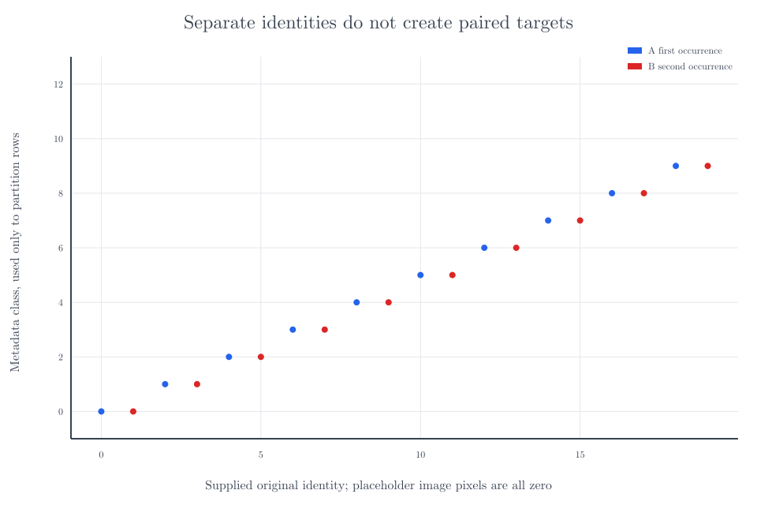
Capture both partial vectors before the first generator write
A smooth scalar analogue makes the scheduling issue hand-checkable. Let a cycle have scalar gains u,v and loss.5*(u*v-1)^2. At u=1,v=2, the joint partials are (2,1). A supplied SGD step of size.1 changes u to.8. Recomputing the v partial then gives(.8*2-1)*.8=.48, rather than the captured1. Applying the two captured partials gives v=1.9; the sequential recomputation would give1.952. These are different methods, without a general claim that one step decreases a nonlinear objective more. The toy uses a squared smooth cycle term; the fitted model uses mean L1 cycles, but its generator coupling has the same capture requirement.
#include <dm/dm.hpp>
int main() {
namespace n = dm::nn;
n::ParameterStore pu(1, n::DType::Float64), pv(2, n::DType::Float64);
auto u = pu.get("u", {1}, n::init::ones());
pv.get("v", {1}, n::init::ones());
pv.set("v", n::full({1}, 2., n::DType::Float64));
auto v = pv.at("v");
auto loss = .5 * n::square(u * v - 1.);
auto captured = n::grad(loss, {u, v});
n::OptimizerConfig config;
config.kind = n::OptimizerKind::Sgd;
n::Optimizer ou(pu, .1, config), ov(pv, .1, config);
ou.step({captured[0]});
auto wrong = n::grad(.5 * n::square(pu.at("u") * v - 1.), {v})[0];
ov.step({captured[1]});
if (std::abs(captured[0].item() - 2) > 1e-14 || std::abs(captured[1].item() - 1) > 1e-14 ||
std::abs(wrong.item() - .48) > 1e-14 || std::abs(pv.at("v").item() - 1.9) > 1e-14)
throw std::runtime_error("joint scalar snapshot");
auto sweep = n::arange(0, 36, 1, n::DType::Float64) / 50. + .5;
auto derivative = (2. * sweep - 1.) * sweep;
auto p = dm::graphics::RPlot::create();
p.y_limits(-.1, 2.7)
.lines(
sweep.to_vector<double>(),
derivative.to_vector<double>(),
"v partial at fixed2",
{37, 99, 235},
2)
.points({1.}, {1.}, "Original u", {16, 145, 74}, 5)
.points({.8}, {.48}, "After u write", {220, 38, 38}, 5)
.x_label("Supplied first gain u, second gain v held at2")
.y_label("Partial of.5*(u*v-1)^2 with respect to v")
.title("The second gradient changes after the first parameter write")
.save_svg("build/cycle_joint_toy.svg");
}
Preserve full G adversarial means and half-scaled critic means
For raw patch maps, each critic uses.5*(mean((real-1)2)+mean(fake2)). Each G adversarial term is mean((fake_score-1)^2), without.5. The shared objective is (adversarial_a+adversarial_b)+(10*(cycle_loss_a+cycle_loss_b)+ 5*(identity_loss_a+identity_loss_b)), with all L1 terms averaging pixels separately inside their own domain. This parenthesization preserves source Float32 arithmetic. At zero critic scores each D loss is.5 and the two G adversarial terms sum to2.
The next untrained toy supplies constant A=0,B=1 and sets every critic leaf to zero. Its six plotted terms check those scales and keep the two weighted image penalties visible. It is separate from the seeded fitted run below.
#include <dm/dm.hpp>
int main() {
namespace n = dm::nn;
namespace m = n::models;
n::ParameterStore ab(6203), ba(6211), da(6217), db(6221);
auto a = n::zeros({1, 28, 28, 1}), b = n::ones(a.shape());
m::CycleGan(ab, ba, da, db, a, b);
for (auto* p : {&da, &db})
for (auto name : p->names())
p->set(name, n::zeros(p->at(name).shape()));
auto out = m::CycleGan(ab, ba, da, db, a, b);
if (out.d_a_loss.item() != .5 || out.d_b_loss.item() != .5 || out.adversarial_a.item() != 1 ||
out.adversarial_b.item() != 1)
throw std::runtime_error("full G/half D scales");
std::vector<double> values{
out.d_a_loss.item(),
out.d_b_loss.item(),
(out.adversarial_a + out.adversarial_b).item(),
(10. * (out.cycle_loss_a + out.cycle_loss_b)).item(),
(5. * (out.identity_loss_a + out.identity_loss_b)).item(),
out.g_loss.item()};
auto p = dm::graphics::RPlot::create();
p.y_limits(0, 26)
.points({1, 2, 3, 4, 5, 6}, values, "Untrained toy", {37, 99, 235}, 5)
.x_label("1 D_a;2 D_b;3 G adversarial sum;4 cycle x10;5 identity x5;6 G total")
.y_label("Supplied-constant objective component")
.title("Two critics and one shared generator objective use distinct scales")
.save_svg("build/cycle_loss_toy.svg");
}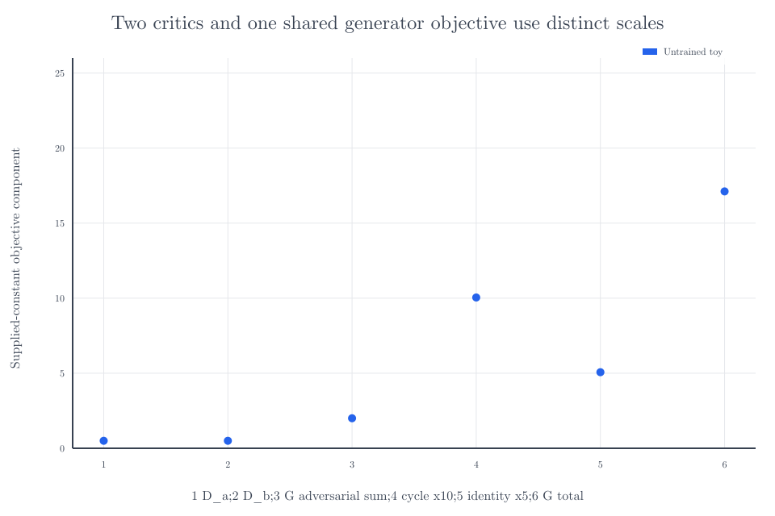
A zero cycle alone does not identify the intended correspondence
For supplied scalar sets A={0,1},B={2,3}, both G(a)=a+2 with inverse F(b)=b-2, and G(a)=3-a with inverse F(b)=3-b, match the same two-point target set and have zero cycles. They disagree about which target belongs to a source. This toy isolates cycle/distribution ambiguity and omits the fitted identity term. Adding an identity penalty is useful regularization but does not turn an unconverged cycle loss into proof of a particular known mapping.
#include <dm/dm.hpp>
int main() {
namespace n = dm::nn;
auto a = n::tensor({0., 1.}, {2}, n::DType::Float64), forward = a + 2., reverse = 3. - a;
if (n::max(n::abs((forward - 2.) - a)).item() != 0 ||
n::max(n::abs((3. - reverse) - a)).item() != 0)
throw std::runtime_error("two exact supplied cycles");
auto p = dm::graphics::RPlot::create();
p.y_limits(1.5, 4.5)
.lines(a.to_vector<double>(), forward.to_vector<double>(), "Add2", {37, 99, 235}, 2)
.points(a.to_vector<double>(), forward.to_vector<double>(), "", {37, 99, 235}, 5)
.lines(a.to_vector<double>(), reverse.to_vector<double>(), "Reverse to3-a", {220, 38, 38}, 2)
.points(a.to_vector<double>(), reverse.to_vector<double>(), "", {220, 38, 38}, 5)
.x_label("Supplied abstract A scalar, not an image pixel")
.y_label("Supplied abstract B scalar")
.title("Two inverse pairs have the same marginal sets and zero cycles")
.save_svg("build/cycle_ambiguity.svg");
}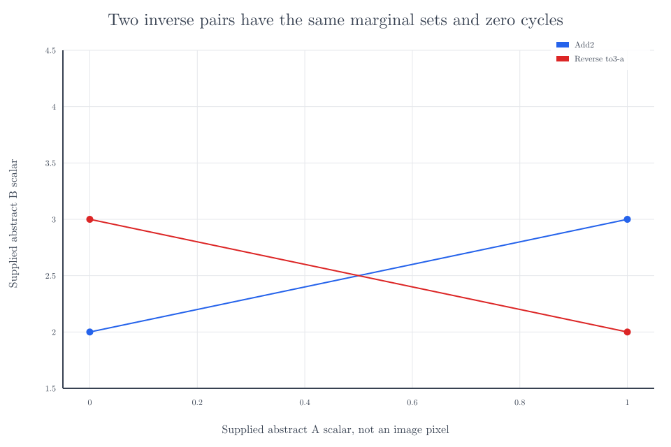
Execute the actual two-skip generator and unconditional critic architectures
Each G is the native two-level U-Net: SAME4x4/stride2 ReLU1->4->8, learned transpose4x4/stride2 ReLU8->4, concat(up14,down14), learned transpose8->2, concat(up28,source),3x3 sigmoid3->1. All conv kernels are biased normal(.02), with zero biases. Source seeds6203/6211 own separate1390-value stores, ten tensors each. The repeated G calls in a cycle reuse their corresponding store.
The executed G_ab trace retains both inputs of both skip concatenations. Spatial and channel glyphs use shared linear scales, a two-pixel visibility floor and at most six sampled planes; labels keep exact shapes. G_ba has the same geometry with independent weights. These traces are shape probes, not extra fits.
#include <dm/dm.hpp>
int main() {
namespace n = dm::nn;
n::ParameterStore p(6203);
n::Module model(
[&](const n::Tensor& source) {
auto out = n::models::Pix2PixGenerate(p, source);
n::model_stage("Down4x4/2 ReLU1→4", source, out.down14);
n::model_stage("Down4x4/2 ReLU4→8", out.down14, out.down7);
n::model_stage("Transpose4x4/2 ReLU8→4", out.down7, out.up14);
n::model_stage(
"Concat up14,down14", std::vector<n::Tensor>{out.up14, out.down14}, out.joined14);
n::model_stage("Transpose4x4/2 ReLU8→2", out.joined14, out.up28);
n::model_stage(
"Concat up28,source", std::vector<n::Tensor>{out.up28, source}, out.joined28);
return n::model_stage("Conv3x3/1 sigmoid3→1", out.joined28, out.image);
},
"CycleGAN G_ab: two actual skips, reused within cycles");
n::ModelPlotOptions options;
options.style = n::ModelPlotStyle::Flow;
options.detail = n::ModelPlotDetail::Blocks;
options.sizing.spatial_scale = n::ModelPlotScale::Linear;
options.sizing.channel_scale = n::ModelPlotScale::Linear;
options.sizing.minimum_extent = 2;
options.sizing.max_planes = 6;
auto figure = model.plot(n::ones({1, 28, 28, 1}), options);
if (figure.parameter_count() != 1390 || p.size() != 10)
throw std::runtime_error("executed G census");
figure.save_svg("build/cycle_generator_architecture.svg");
}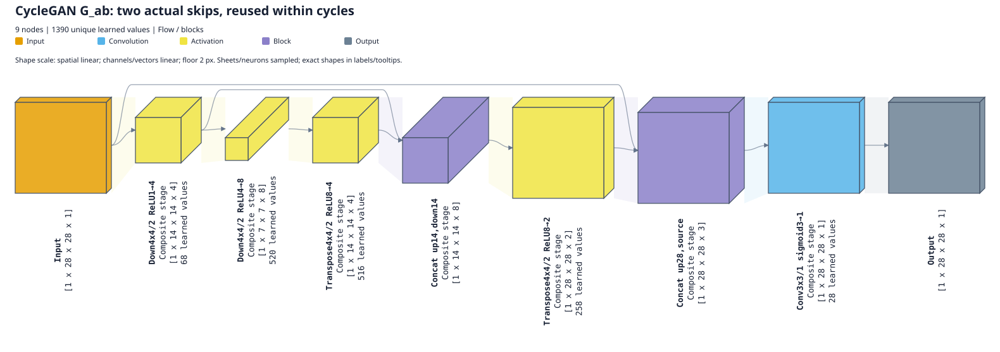
Each D accepts one image alone, without a condition concatenation. Two biased SAME4x4/stride2 maps1->4->8, each followed by LeakyReLU(.2), feed a biased3x3 raw8->1 map. Every image has49 overlapping patch logits with nominal18x18 receptive fields, including zero padding near borders. Seeds6217/6221 create 661 values in six tensors each; there is no sigmoid or batch-dependent state.
#include <dm/dm.hpp>
int main() {
namespace n = dm::nn;
n::ParameterStore p(6217);
n::Module model(
[&](const n::Tensor& image) { return n::models::CycleGanDiscriminate(p, image); },
"CycleGAN D_a: unconditional local raw patch scores");
n::ModelPlotOptions options;
options.style = n::ModelPlotStyle::Flow;
options.detail = n::ModelPlotDetail::Layers;
options.sizing.spatial_scale = n::ModelPlotScale::Linear;
options.sizing.channel_scale = n::ModelPlotScale::Linear;
options.sizing.minimum_extent = 2;
options.sizing.max_planes = 6;
auto figure = model.plot(n::ones({1, 28, 28, 1}), options);
if (figure.parameter_count() != 661 || p.size() != 6)
throw std::runtime_error("unconditional critic census");
figure.save_svg("build/cycle_critic_architecture.svg");
}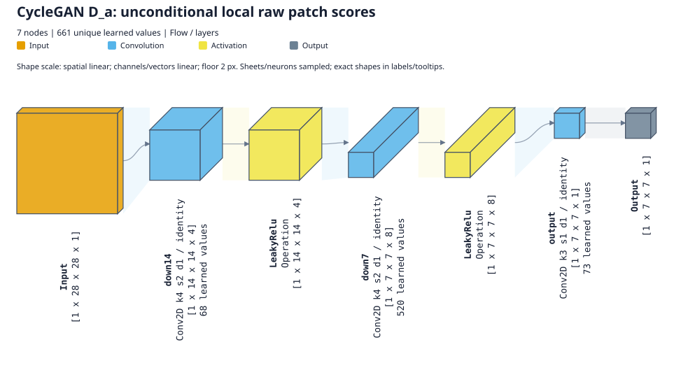
Prepare the real disjoint image domains through native APIs
prepare_example_data("mnist-assets",...) and LoadSaliency provide the original
1000/200/200 fitting/validation/test rows, source IDs, balanced labels and exact
byte normalization. SplitCycleDomains makes500/500 fitting A/B rows and100/100
in each held-out pool. The first half of every digit supplies original A and the
second half supplies rotated/inverted B. Their source IDs are disjoint across
domains and checked original pools. The preview selects each class through
original-ID metadata; those labels remain outside the model.
#include <dm/dm.hpp>
namespace n = dm::nn;
namespace m = n::models;
using A = std::map<std::string, n::Tensor>;
A Read(const std::string& path) {
A a;
for (const auto& [key, value] : n::load_npz(path))
a.emplace(key, value);
return a;
}
std::vector<std::int64_t> BalancedRows(const n::Tensor& ids, const m::SaliencyData& pool) {
std::map<std::int64_t, std::int64_t> label;
auto source = pool.source.to_vector<std::int64_t>(),
labels = pool.labels.to_vector<std::int64_t>(), selected = ids.to_vector<std::int64_t>();
for (std::size_t i = 0; i < source.size(); ++i)
label.emplace(source[i], labels[i]);
std::vector<std::int64_t> rows;
for (int c = 0; c < 10; ++c) {
bool found = false;
for (std::size_t i = 0; i < selected.size(); ++i)
if (label.at(selected[i]) == c) {
rows.push_back(i);
found = true;
break;
}
if (!found)
throw std::runtime_error("all ten diagnostic classes");
}
return rows;
}
int main() {
auto path = std::filesystem::path(dm::datasets::data_home()) / "saliency";
dm::datasets::prepare_example_data("mnist-assets", path.parent_path());
auto pools = m::LoadSaliency(path);
auto d = m::SplitCycleDomains(pools[0].images, pools[0].labels, pools[0].source);
auto ar = BalancedRows(d.ids_a, pools[0]), br = BalancedRows(d.ids_b, pools[0]);
std::vector<n::Tensor> panels;
for (int c = 0; c < 10; ++c) {
panels.push_back(n::take_rows(d.a, {ar[c]}));
panels.push_back(n::take_rows(d.b, {br[c]}));
}
n::save_image_grid(n::concat(panels, 0), "build/cycle_domains.png", 2, 0, 1, 4, 220 / 255., 3);
}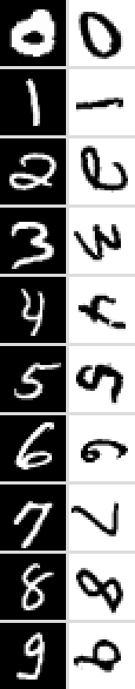
Keep the full critic and joint-generator schedule visible
Independent batch orders use seeds6233/6247. Every epoch visits all500 rows in each fitting domain, with15 full32-row batches and one retained20-row batch. Three fixed epochs give48 steps per group and192 writes. Four independent Adam states use.0002,beta1=.5,beta2=.999,epsilon1e-8. Validation is recorded without selecting a checkpoint; the final epoch is fixed before looking at test results. An optional edited init path imports all32 checkpoint tensors; the preserved run uses the stated native seeds.
For each batch D_a and D_b take their own fresh captures and selected writes. A fresh common G forward through both updated critics then supplies both generator vectors before either write. The visible capture helper performs exactly one forward for every requested group set. G_ab and G_ba apply those saved vectors. The first-step wrong control recomputes G_ba after G_ab and measures the changed gradient, without applying it. Every phase verifies that other stores stay bit exact. The API has no capture, optimizer, hidden no-grad, known target mapping or mutable normalization state. It permits unequal positive domain row counts; this original schedule deliberately uses equal independent batch sizes.
All ten original archives/2467653 values, both galleries, history,batch records and non-timing metrics are preserved. The program additionally retains347 phase/probe archives/3988406 values, including each critic capture, the joint G capture, every post-write store, epoch outputs and wrong-gradient control. Known mapping targets are created only after the fixed final checkpoint, for diagnostics. Restoration initializes independent stores(seed1/2/3/4) and verifies all4102 values exactly.
#include <dm/dm.hpp>
namespace nn = dm::nn;
namespace n = nn;
namespace m = nn::models;
using Arrays = std::map<std::string, nn::Tensor>;
using nn::Tensor;
namespace {
void Require(bool condition, const std::string& message) {
if (!condition)
throw std::runtime_error(message);
}
void SaveArrays(const std::string& path, const Arrays& a) {
nn::save_npz(path, nn::NamedTensors(a.begin(), a.end()));
}
bool Equal(const Tensor& a, const Tensor& b) {
return nn::equal_bits(a, b);
}
bool Equal(const Arrays& a, const Arrays& b) {
if (a.size() != b.size())
return false;
for (const auto& [key, value] : a)
if (!b.count(key) || !Equal(value, b.at(key)))
return false;
return true;
}
double MaxAbsDiff(const Tensor& a, const Tensor& b) {
return nn::max(nn::abs(nn::cast(a, nn::DType::Float64) - nn::cast(b, nn::DType::Float64))).item();
}
Arrays Fields(const m::CycleGanOutput& o) {
return {
{"fake_a", o.fake_a},
{"fake_b", o.fake_b},
{"cycle_a", o.cycle_a},
{"cycle_b", o.cycle_b},
{"identity_a", o.identity_a},
{"identity_b", o.identity_b},
{"real_a_score", o.real_a_score},
{"real_b_score", o.real_b_score},
{"fake_a_score", o.fake_a_score},
{"fake_b_score", o.fake_b_score},
{"g_loss", o.g_loss},
{"d_a_loss", o.d_a_loss},
{"d_b_loss", o.d_b_loss},
{"adversarial_a", o.adversarial_a},
{"adversarial_b", o.adversarial_b},
{"cycle_loss_a", o.cycle_loss_a},
{"cycle_loss_b", o.cycle_loss_b},
{"identity_loss_a", o.identity_loss_a},
{"identity_loss_b", o.identity_loss_b}};
}
double Value(const Arrays& a, const std::string& key) {
return a.at(key).item();
}
Tensor Flat784(const Tensor& x) {
return nn::reshape(x, {-1, 784});
}
Tensor Rows(const Tensor& x, const std::vector<std::int64_t>& rows) {
return nn::take_rows(x, rows);
}
void RequireOnlyOwnersChanged(
const Arrays& before,
const Arrays& after,
const std::vector<std::string>& prefixes,
const std::string& message,
bool require_change) {
bool changed = false;
for (const auto& [key, value] : before) {
bool selected = false;
for (const auto& prefix : prefixes)
selected |= key.starts_with(prefix);
if (!Equal(value, after.at(key))) {
Require(selected, message);
changed = true;
}
}
if (require_change)
Require(changed, message + " changed selected values");
}
void Mosaic(const std::filesystem::path& path, const Tensor& images, std::int64_t columns) {
nn::save_image_grid(
nn::reshape(images, {-1, 28, 28, 1}), path.string(), columns, 0, 1, 4, 220 / 255., 3);
}
} // namespace
int main() {
const auto data = std::filesystem::path(dm::datasets::data_home()) / "saliency";
dm::datasets::prepare_example_data("mnist-assets", data.parent_path());
const std::filesystem::path root = "build/cycle_gan";
const int epochs = 3;
const std::string init;
std::filesystem::create_directories(root);
const auto pools = m::LoadSaliency(data);
std::vector<m::CycleDomains> domains;
Arrays records;
for (int k = 0; k < 3; ++k) {
domains.push_back(m::SplitCycleDomains(pools[k].images, pools[k].labels, pools[k].source));
const std::string name = k == 0 ? "fit" : k == 1 ? "validation" : "test";
records.emplace(name + "_a", domains.back().a);
records.emplace(name + "_b", domains.back().b);
records.emplace(name + "_ids_a", domains.back().ids_a);
records.emplace(name + "_ids_b", domains.back().ids_b);
}
SaveArrays((root / "data.npz").string(), records);
n::ParameterStore g_ab(6203), g_ba(6211), d_a(6217), d_b(6221);
std::vector<n::ParameterStore*> stores{&g_ab, &g_ba, &d_a, &d_b};
{
n::NoGradGuard guard;
auto zero = n::zeros({1, 28, 28, 1});
m::Pix2PixGenerate(g_ab, zero);
m::Pix2PixGenerate(g_ba, zero);
m::CycleGanDiscriminate(d_a, zero);
m::CycleGanDiscriminate(d_b, zero);
}
auto forward = [&](const Tensor& a, const Tensor& b) {
return m::CycleGan(g_ab, g_ba, d_a, d_b, a, b);
};
auto snapshot = [&]() {
Arrays out;
for (int k = 0; k < 4; ++k)
for (const auto& name : stores[k]->names())
out.emplace(std::to_string(k) + "/" + name, stores[k]->at(name).detach().clone());
return out;
};
auto evaluate = [&](const Tensor& a, const Tensor& b) {
n::NoGradGuard guard;
return Fields(forward(a, b));
};
auto capture = [&](const std::vector<int>& groups, const Tensor& a, const Tensor& b) {
// ONE forward for all requested groups; no write occurs inside capture.
const auto out = forward(a, b);
Arrays result;
n::GradOptions keep;
keep.retain_graph = true;
for (int k : groups) {
auto gradient = n::grad(
k < 2 ? out.g_loss
: k == 2 ? out.d_a_loss
: out.d_b_loss,
stores[k]->parameters(),
keep);
for (std::size_t i = 0; i < gradient.size(); ++i)
result.emplace(std::to_string(k) + "/" + stores[k]->names()[i], gradient[i]);
}
return result;
};
auto restore = [](const std::vector<n::ParameterStore*>& owners, const std::string& path) {
auto arrays = n::load_npz(path);
Require(arrays.size() == 32, "complete32-leaf checkpoint");
for (const auto& [key, value] : arrays) {
Require(
key.size() > 2 && key[0] >= '0' && key[0] <= '3' && key[1] == '/',
"known checkpoint prefix");
auto& p = *owners[key[0] - '0'];
Require(
p.contains(key.substr(2)) && p.at(key.substr(2)).shape() == value.shape(),
"known matching checkpoint tensor");
p.set(key.substr(2), value);
}
};
n::OptimizerConfig config;
config.kind = n::OptimizerKind::Adam;
config.beta1 = .5;
config.beta2 = .999;
config.epsilon = 1e-8;
std::vector<std::unique_ptr<n::Optimizer>> optimizers;
for (auto* p : stores)
optimizers.push_back(std::make_unique<n::Optimizer>(*p, .0002, config));
std::filesystem::create_directories(root / "phases");
if (!init.empty())
restore(stores, init);
Require(
stores[0]->count() == 1390 && stores[1]->count() == 1390 && stores[2]->count() == 661 &&
stores[3]->count() == 661,
"4102 params");
std::size_t tensors = 0;
for (int k = 0; k < 4; ++k)
tensors += stores[k]->size();
Require(tensors == 32, "32 tensors");
SaveArrays((root / "initial_arrays.npz").string(), snapshot());
SaveArrays((root / "initial_outputs.npz").string(), evaluate(domains[2].a, domains[2].b));
nn::BatchOrder order_a(500, 32, 6233), order_b(500, 32, 6247);
int steps = 0;
double wrong_sequential_effect = 0;
Tensor first_a, first_b;
std::ofstream history(root / "history.tsv"), batches(root / "batches.tsv");
history.precision(17);
history << "epoch\tg_loss\td_a_loss\td_b_loss\tcycle_loss_a\tcycle_loss_b\tidentity_loss_"
"a\tidentity_loss_b\n";
batches << "epoch\tstep\ta_row\tb_row\ta_source_id\tb_source_id\n";
const auto ids_a = nn::cast(domains[0].ids_a, nn::DType::Int64).to_vector<std::int64_t>();
const auto ids_b = nn::cast(domains[0].ids_b, nn::DType::Int64).to_vector<std::int64_t>();
const auto started = std::chrono::steady_clock::now();
for (int epoch = 1; epoch <= epochs; ++epoch) {
order_a.begin_epoch();
order_b.begin_epoch();
for (;;) {
const auto rows_a = order_a.next(), rows_b = order_b.next();
Require(rows_a.size() == rows_b.size(), "equal domain batch sizes but independent orders");
if (rows_a.empty())
break;
const Tensor a = Rows(domains[0].a, rows_a), b = Rows(domains[0].b, rows_b);
if (!steps) {
first_a = a, first_b = b;
SaveArrays((root / "probe-first-input.npz").string(), {{"a", a}, {"b", b}});
SaveArrays((root / "first_forward.npz").string(), evaluate(a, b));
}
for (int group : {2, 3}) {
const auto captured = capture({group}, a, b);
const auto phase = "batch" + std::to_string(steps) + "-d" + std::to_string(group);
SaveArrays((root / "phases" / (phase + "-gradient.npz")).string(), captured);
const auto before = snapshot();
std::vector<Tensor> ordered;
for (const auto& name : stores[group]->names())
ordered.push_back(captured.at(std::to_string(group) + "/" + name));
optimizers[group]->step(ordered);
SaveArrays((root / "phases" / (phase + "-after.npz")).string(), snapshot());
RequireOnlyOwnersChanged(
before,
snapshot(),
{std::to_string(group) + "/"},
"D step changes ONLY its own critic",
false);
}
// Fresh forward through BOTH updated critics; capture BOTH G vectors before either write.
const auto joint = capture({0, 1}, a, b);
SaveArrays(
(root / "phases" / ("batch" + std::to_string(steps) + "-g-gradient.npz")).string(),
joint);
for (int group : {0, 1}) {
const auto before = snapshot();
std::vector<Tensor> ordered;
for (const auto& name : stores[group]->names())
ordered.push_back(joint.at(std::to_string(group) + "/" + name));
optimizers[group]->step(ordered);
SaveArrays(
(root / "phases" /
("batch" + std::to_string(steps) + "-g" + std::to_string(group) + "-after.npz"))
.string(),
snapshot());
RequireOnlyOwnersChanged(
before,
snapshot(),
{std::to_string(group) + "/"},
"captured G step changes ONLY own group",
false);
if (!steps && group == 0) {
auto wrong = capture({1}, a, b);
SaveArrays((root / "probe-wrong-sequential-gradient.npz").string(), wrong);
for (const auto& [key, value] : wrong)
wrong_sequential_effect =
std::max(wrong_sequential_effect, MaxAbsDiff(value, joint.at(key)));
}
}
for (std::size_t i = 0; i < rows_a.size(); ++i)
batches << epoch << '\t' << steps << '\t' << rows_a[i] << '\t' << rows_b[i] << '\t'
<< ids_a[rows_a[i]] << '\t' << ids_b[rows_b[i]] << '\n';
++steps;
}
SaveArrays((root / ("probe-epoch" + std::to_string(epoch) + ".npz")).string(), snapshot());
SaveArrays(
(root / ("probe-epoch" + std::to_string(epoch) + "-test.npz")).string(),
evaluate(domains[2].a, domains[2].b));
const auto v = evaluate(domains[1].a, domains[1].b);
SaveArrays((root / ("probe-epoch" + std::to_string(epoch) + "-validation.npz")).string(), v);
history << epoch;
for (auto key :
{"g_loss",
"d_a_loss",
"d_b_loss",
"cycle_loss_a",
"cycle_loss_b",
"identity_loss_a",
"identity_loss_b"})
history << '\t' << Value(v, key);
history << '\n';
std::cout << "epoch " << epoch << ": G=" << Value(v, "g_loss")
<< ", cycle A/B=" << Value(v, "cycle_loss_a") << "/" << Value(v, "cycle_loss_b")
<< ", D A/B=" << Value(v, "d_a_loss") << "/" << Value(v, "d_b_loss") << std::endl;
}
const double seconds =
std::chrono::duration<double>(std::chrono::steady_clock::now() - started).count();
Require(
wrong_sequential_effect > 1e-8, "coupled G gradients MUST be captured before either write");
const auto checkpoint = (root / "final.npz").string();
for (auto& optimizer : optimizers)
Require(optimizer->iterations() == 48, "four independent48-step counters");
SaveArrays(checkpoint, snapshot());
SaveArrays((root / "final_gradients.npz").string(), capture({0, 1, 2, 3}, first_a, first_b));
std::vector<std::unique_ptr<n::ParameterStore>> restored;
std::vector<n::ParameterStore*> restored_stores;
for (int seed = 1; seed <= 4; ++seed) {
restored.push_back(std::make_unique<n::ParameterStore>(seed));
restored_stores.push_back(restored.back().get());
}
{
n::NoGradGuard guard;
auto zero = n::zeros({1, 28, 28, 1});
m::Pix2PixGenerate(*restored_stores[0], zero);
m::Pix2PixGenerate(*restored_stores[1], zero);
m::CycleGanDiscriminate(*restored_stores[2], zero);
m::CycleGanDiscriminate(*restored_stores[3], zero);
}
restore(restored_stores, checkpoint);
auto restored_arrays = [&]() {
Arrays a;
for (int k = 0; k < 4; ++k)
for (const auto& name : restored_stores[k]->names())
a.emplace(std::to_string(k) + "/" + name, restored_stores[k]->at(name).detach().clone());
return a;
};
auto restored_evaluate = [&](const Tensor& a, const Tensor& b) {
n::NoGradGuard guard;
return Fields(
m::CycleGan(
*restored_stores[0],
*restored_stores[1],
*restored_stores[2],
*restored_stores[3],
a,
b));
};
auto translate = [&](bool direction, const Tensor& image) {
n::NoGradGuard guard;
return m::Pix2PixGenerate(*restored_stores[direction ? 0 : 1], image).image;
};
Require(Equal(snapshot(), restored_arrays()), "all four groups restore exact");
const auto before = restored_arrays();
const auto output = restored_evaluate(domains[2].a, domains[2].b);
const Tensor ab = translate(true, domains[2].a), ba = translate(false, domains[2].b);
Require(
Equal(ab, output.at("fake_b")) && Equal(ba, output.at("fake_a")),
"SOURCE ONLY both translations without opposite domain images");
double parity = 0;
for (bool direction : {true, false})
parity = std::max(
parity,
MaxAbsDiff(
translate(direction, Rows(direction ? domains[2].a : domains[2].b, {0})),
Rows(direction ? ab : ba, {0})));
Require(parity < 2e-6, "both G single batch parity");
Require(Equal(before, restored_arrays()), "immutable all four groups");
SaveArrays((root / "outputs.npz").string(), output);
const Tensor true_b = m::RotateInvertGrayscale(domains[2].a), true_a = domains[2].original_b;
SaveArrays(
(root / "diagnostic_known_mapping.npz").string(),
{{"a_to_b_target", true_b}, {"b_to_a_target", true_a}});
auto mse = [](const Tensor& x, const Tensor& y) {
return nn::mean(nn::square(nn::cast(x, nn::DType::Float64) - nn::cast(y, nn::DType::Float64)))
.item();
};
const double mse_ab = mse(ab, true_b), mse_ba = mse(ba, true_a);
for (bool direction : {true, false}) {
std::vector<Tensor> rows;
for (std::int64_t i = 0; i < 10; ++i) {
rows.push_back(Rows(direction ? domains[2].a : domains[2].b, {i}));
rows.push_back(Rows(direction ? ab : ba, {i}));
rows.push_back(Rows(output.at(direction ? "cycle_a" : "cycle_b"), {i}));
rows.push_back(Rows(direction ? true_b : true_a, {i}));
}
const Tensor gallery = nn::reshape(nn::concat(rows, 0), {40, 784});
const std::string name = direction ? "a_to_b" : "b_to_a";
SaveArrays((root / (name + "_gallery.npz")).string(), {{"images", gallery}});
Mosaic(root / (name + ".png"), gallery, 4);
}
std::ofstream meta(root / "metrics.json");
meta.precision(17);
meta << "{\"parameters\":4102,\"epochs\":" << epochs << ",\"steps_per_group\":" << steps
<< ",\"optimizer_updates\":" << 4 * steps << ",\"selected_epoch_fixed_final\":" << epochs
<< ",\"wrong_sequential_generator_gradient_max_difference\":" << wrong_sequential_effect
<< ",\"diagnostic_mapping_a_to_b_mse\":" << mse_ab
<< ",\"diagnostic_mapping_b_to_a_mse\":" << mse_ba
<< ",\"single_batch_max_error\":" << parity;
for (auto key :
{"g_loss",
"d_a_loss",
"d_b_loss",
"cycle_loss_a",
"cycle_loss_b",
"identity_loss_a",
"identity_loss_b"})
meta << ",\"test_" << key << "\":" << Value(output, key);
meta << ",\"training_seconds\":" << seconds << "}\n";
Require(bool(meta) && bool(history) && bool(batches), "complete CycleGAN records");
meta.close();
history.close();
batches.close();
std::cout << "fixed final=" << epochs
<< ", joint G snapshot wrong sequential difference=" << wrong_sequential_effect
<< ", mapping MSE=" << mse_ab << "/" << mse_ba
<< "; unpaired/joint grad/restore/source only/immutable PASS (training " << seconds
<< " s)\nArtifacts: " << root.string() << "\nAll cycle_gan checks passed.\n";
std::ifstream file(root / "history.tsv");
std::string header;
std::getline(file, header);
std::vector<double> plot_epochs, ca, cb, ia, ib;
double ep, gl, dal, dbl, cal, cbl, ial, ibl;
while (file >> ep >> gl >> dal >> dbl >> cal >> cbl >> ial >> ibl) {
plot_epochs.push_back(ep);
ca.push_back(cal);
cb.push_back(cbl);
ia.push_back(ial);
ib.push_back(ibl);
}
auto learning = dm::graphics::RPlot::create();
learning.y_limits(0, .9)
.lines(plot_epochs, ca, "Cycle A", {37, 99, 235}, 2)
.points(plot_epochs, ca, "", {37, 99, 235}, 4)
.lines(plot_epochs, cb, "Cycle B", {220, 38, 38}, 2)
.points(plot_epochs, cb, "", {220, 38, 38}, 4)
.lines(plot_epochs, ia, "Identity A", {16, 145, 74}, 2)
.points(plot_epochs, ia, "", {16, 145, 74}, 4)
.lines(plot_epochs, ib, "Identity B", {147, 51, 234}, 2)
.points(plot_epochs, ib, "", {147, 51, 234}, 4)
.x_label("Completed epoch; fixed final3 without early stopping")
.y_label("Validation mean absolute pixel error, unit range")
.title("Three epochs leave large cycle and identity errors")
.save_svg("build/cycle_learning.svg");
}epoch 1: G=16.1641, cycle A/B=0.468616/0.474623, D A/B=0.495259/0.492733 epoch 2: G=15.9779, cycle A/B=0.464855/0.471618, D A/B=0.482119/0.465656 epoch 3: G=15.6066, cycle A/B=0.459178/0.468738, D A/B=0.450151/0.391976 fixed final=3, joint G snapshot wrong sequential difference=0.000810921, mapping MSE=0.229145/0.210121; unpaired/joint grad/restore/source only/immutable PASS (training 2.6413 s) Artifacts: build/cycle_gan All cycle_gan checks passed.
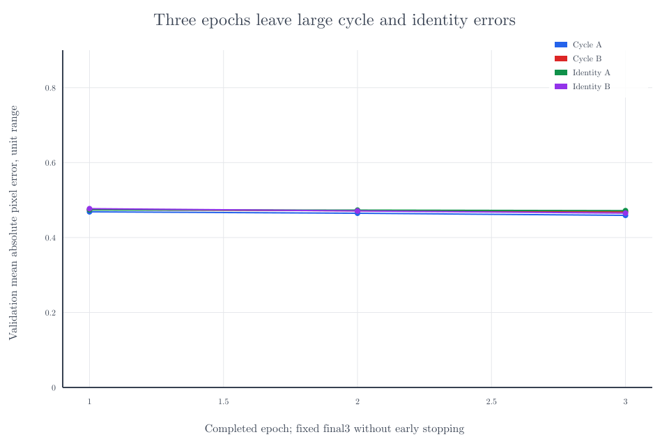
Preserve both original galleries and their limited class coverage
Each original gallery shows the first ten held-out rows of its source domain; these are all label0 in the class-ordered pool. Columns are source,translation, round trip and known diagnostic target. Those known targets do not enter fitting. The PNG bytes below match the original files. The translations are weak and gray, and the round trips do not recover the source digits accurately.
#include <dm/dm.hpp>
int main() {
std::filesystem::copy_file(
"build/cycle_gan/a_to_b.png",
"build/cycle_a_to_b.png",
std::filesystem::copy_options::overwrite_existing);
}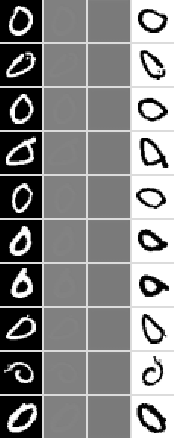
#include <dm/dm.hpp>
int main() {
std::filesystem::copy_file(
"build/cycle_gan/b_to_a.png",
"build/cycle_b_to_a.png",
std::filesystem::copy_options::overwrite_existing);
}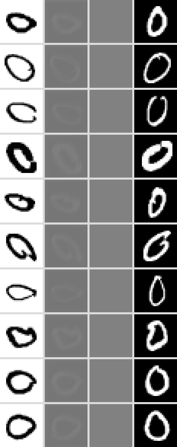
Show both directions across all ten classes without changing the model
The next fixed-final gallery chooses the first source of every label in each domain. Each row has four A->B columns(source,prediction,cycle,known target), then four B->A columns in the same order. The source identities in the two directions remain different. Labels choose these display rows only; no refitting or score selection follows the preview. All80 panels are saved as tensors as well.
#include <dm/dm.hpp>
namespace n = dm::nn;
namespace m = n::models;
using A = std::map<std::string, n::Tensor>;
A Read(const std::string& path) {
A a;
for (const auto& [key, value] : n::load_npz(path))
a.emplace(key, value);
return a;
}
std::vector<std::int64_t> BalancedRows(const n::Tensor& ids, const m::SaliencyData& pool) {
std::map<std::int64_t, std::int64_t> label;
auto source = pool.source.to_vector<std::int64_t>(),
labels = pool.labels.to_vector<std::int64_t>(), selected = ids.to_vector<std::int64_t>();
for (std::size_t i = 0; i < source.size(); ++i)
label.emplace(source[i], labels[i]);
std::vector<std::int64_t> rows;
for (int c = 0; c < 10; ++c) {
bool found = false;
for (std::size_t i = 0; i < selected.size(); ++i)
if (label.at(selected[i]) == c) {
rows.push_back(i);
found = true;
break;
}
if (!found)
throw std::runtime_error("all ten diagnostic classes");
}
return rows;
}
int main() {
auto data = Read("build/cycle_gan/data.npz"), out = Read("build/cycle_gan/outputs.npz"),
target = Read("build/cycle_gan/diagnostic_known_mapping.npz");
auto pools = m::LoadSaliency(std::filesystem::path(dm::datasets::data_home()) / "saliency");
auto ar = BalancedRows(data.at("test_ids_a"), pools[2]),
br = BalancedRows(data.at("test_ids_b"), pools[2]);
std::vector<n::Tensor> panels;
for (int c = 0; c < 10; ++c) {
for (auto name : {"test_a"})
panels.push_back(n::take_rows(data.at(name), {ar[c]}));
for (auto name : {"fake_b", "cycle_a"})
panels.push_back(n::take_rows(out.at(name), {ar[c]}));
panels.push_back(n::take_rows(target.at("a_to_b_target"), {ar[c]}));
panels.push_back(n::take_rows(data.at("test_b"), {br[c]}));
for (auto name : {"fake_a", "cycle_b"})
panels.push_back(n::take_rows(out.at(name), {br[c]}));
panels.push_back(n::take_rows(target.at("b_to_a_target"), {br[c]}));
}
auto gallery = n::concat(panels, 0);
n::save_npz("build/cycle_gan/probe-balanced-gallery.npz", {{"images", gallery}});
n::save_image_grid(gallery, "build/cycle_balanced.png", 8, 0, 1, 4, 220 / 255., 3);
}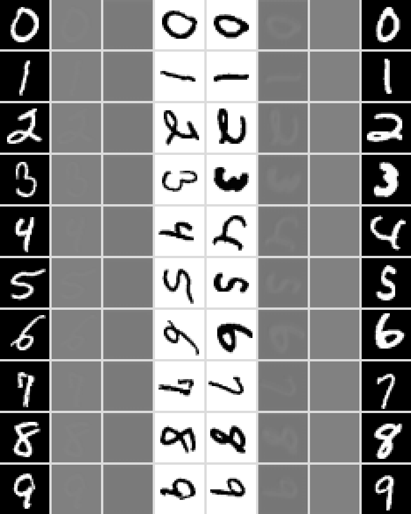
Inspect all1390 coordinates of the changed second-generator gradient
On the first real training batch, the source wrong control changes the G_ba partial vector by at most.00081092119216918945 after G_ab's write. The next plot uses all1390 G_ba coordinates, ordered by sorted source tensor key and then row-major coordinate. It compares the saved common-snapshot vector with the saved recomputed control. This is a gradient difference, not a parameter change or a claim that the alternative schedule would converge to the same result.
#include <dm/dm.hpp>
namespace n = dm::nn;
namespace m = n::models;
using A = std::map<std::string, n::Tensor>;
A Read(const std::string& path) {
A a;
for (const auto& [key, value] : n::load_npz(path))
a.emplace(key, value);
return a;
}
std::vector<std::int64_t> BalancedRows(const n::Tensor& ids, const m::SaliencyData& pool) {
std::map<std::int64_t, std::int64_t> label;
auto source = pool.source.to_vector<std::int64_t>(),
labels = pool.labels.to_vector<std::int64_t>(), selected = ids.to_vector<std::int64_t>();
for (std::size_t i = 0; i < source.size(); ++i)
label.emplace(source[i], labels[i]);
std::vector<std::int64_t> rows;
for (int c = 0; c < 10; ++c) {
bool found = false;
for (std::size_t i = 0; i < selected.size(); ++i)
if (label.at(selected[i]) == c) {
rows.push_back(i);
found = true;
break;
}
if (!found)
throw std::runtime_error("all ten diagnostic classes");
}
return rows;
}
int main() {
auto joint = Read("build/cycle_gan/phases/batch0-g-gradient.npz"),
wrong = Read("build/cycle_gan/probe-wrong-sequential-gradient.npz");
std::vector<n::Tensor> difference;
for (auto& [key, value] : wrong)
difference.push_back(
n::reshape(
n::abs(n::cast(value, n::DType::Float64) - n::cast(joint.at(key), n::DType::Float64)),
{-1}));
auto delta = n::concat(difference, 0);
if (delta.numel() != 1390 || std::abs(n::max(delta).item() - .00081092119216918945) > 1e-15)
throw std::runtime_error("source wrong-sequential vector");
auto x = n::arange(0, 1390, 1, n::DType::Float64);
auto p = dm::graphics::RPlot::create();
p.y_limits(-.00003, .0015)
.lines(
x.to_vector<double>(), delta.to_vector<double>(), "After G_ab write", {37, 99, 235}, 1.3)
.x_label("G_ba partial coordinate; sorted tensor keys then row-major values")
.y_label("Absolute change from the captured common-snapshot partial")
.title("Recomputing after the first G write changes the second vector")
.save_svg("build/cycle_wrong_gradient.svg");
}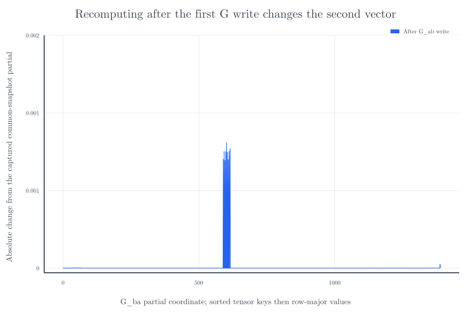
Compare unconditional patch-score distributions without pairing observations
Each held-out domain has100 real rows. The translated A rows come from B sources, and translated B rows from A sources. The CDFs below therefore compare separate distributions of per-image mean raw patch score; they do not connect corresponding row numbers. All49 scores enter each image mean, and all100 means enter each curve. Scores remain raw, with least-squares targets1 for real and0 for fake. They are not probabilities or independent patch observations.
#include <dm/dm.hpp>
namespace n = dm::nn;
namespace m = n::models;
using A = std::map<std::string, n::Tensor>;
A Read(const std::string& path) {
A a;
for (const auto& [key, value] : n::load_npz(path))
a.emplace(key, value);
return a;
}
std::vector<std::int64_t> BalancedRows(const n::Tensor& ids, const m::SaliencyData& pool) {
std::map<std::int64_t, std::int64_t> label;
auto source = pool.source.to_vector<std::int64_t>(),
labels = pool.labels.to_vector<std::int64_t>(), selected = ids.to_vector<std::int64_t>();
for (std::size_t i = 0; i < source.size(); ++i)
label.emplace(source[i], labels[i]);
std::vector<std::int64_t> rows;
for (int c = 0; c < 10; ++c) {
bool found = false;
for (std::size_t i = 0; i < selected.size(); ++i)
if (label.at(selected[i]) == c) {
rows.push_back(i);
found = true;
break;
}
if (!found)
throw std::runtime_error("all ten diagnostic classes");
}
return rows;
}
int main() {
auto out = Read("build/cycle_gan/outputs.npz");
auto p = dm::graphics::RPlot::create();
p.y_limits(0, 1.8);
for (auto [key, label, color] :
std::vector<std::tuple<std::string, std::string, dm::graphics::RGB>>{
{"real_a_score", "D_a real", {37, 99, 235}},
{"fake_a_score", "D_a translated", {220, 38, 38}},
{"real_b_score", "D_b real", {16, 145, 74}},
{"fake_b_score", "D_b translated", {147, 51, 234}}}) {
auto means = n::mean(n::cast(out.at(key), n::DType::Float64), {1, 2, 3}).to_vector<double>();
std::sort(means.begin(), means.end());
std::vector<double> probability;
for (std::size_t i = 0; i < means.size(); ++i)
probability.push_back(double(i + 1) / means.size());
p.lines(means, probability, label, color, 2);
}
p.x_label("Per-image mean raw patch score; independent source rows")
.y_label("Empirical cumulative fraction of100 image means")
.title("Unpaired real and translated score distributions stay separate")
.save_svg("build/cycle_score_cdfs.svg");
}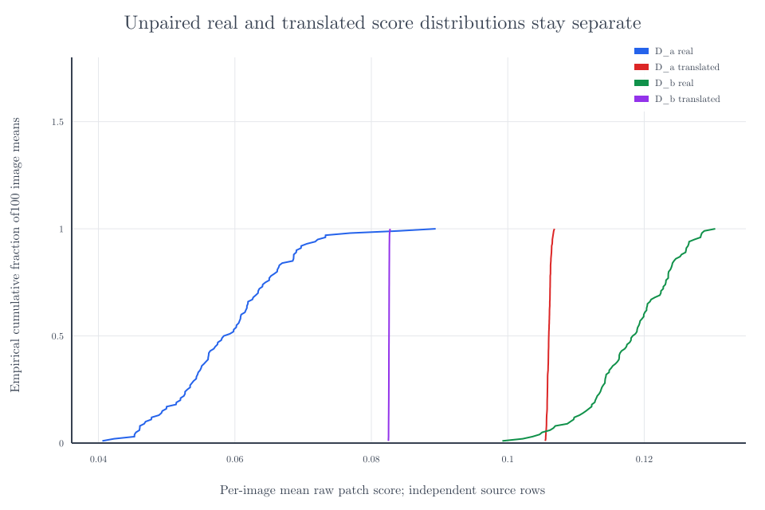
Compare the known-map diagnostic with fitting-only target-domain means
The original fixed-final diagnostic mapping MSEs are.229144769 for A->B and .210121211 for B->A. The known rotation/inversion supplies those targets only after fitting. An additional reference predicts the fitting B mean for every A source, or fitting A mean for every B source. Means use all500 fitting rows of their own target domain and Double arithmetic, with no held-out fitting. They do not use a source/target correspondence either. The figure records both model errors and both mean-reference errors without changing the checkpoint.
#include <dm/dm.hpp>
namespace n = dm::nn;
namespace m = n::models;
using A = std::map<std::string, n::Tensor>;
A Read(const std::string& path) {
A a;
for (const auto& [key, value] : n::load_npz(path))
a.emplace(key, value);
return a;
}
std::vector<std::int64_t> BalancedRows(const n::Tensor& ids, const m::SaliencyData& pool) {
std::map<std::int64_t, std::int64_t> label;
auto source = pool.source.to_vector<std::int64_t>(),
labels = pool.labels.to_vector<std::int64_t>(), selected = ids.to_vector<std::int64_t>();
for (std::size_t i = 0; i < source.size(); ++i)
label.emplace(source[i], labels[i]);
std::vector<std::int64_t> rows;
for (int c = 0; c < 10; ++c) {
bool found = false;
for (std::size_t i = 0; i < selected.size(); ++i)
if (label.at(selected[i]) == c) {
rows.push_back(i);
found = true;
break;
}
if (!found)
throw std::runtime_error("all ten diagnostic classes");
}
return rows;
}
int main() {
auto data = Read("build/cycle_gan/data.npz"), out = Read("build/cycle_gan/outputs.npz"),
target = Read("build/cycle_gan/diagnostic_known_mapping.npz");
auto mean_a = n::tile(
n::mean(n::cast(data.at("fit_a"), n::DType::Float64), {0}, true), {100, 1, 1, 1}),
mean_b = n::tile(
n::mean(n::cast(data.at("fit_b"), n::DType::Float64), {0}, true), {100, 1, 1, 1});
auto mse = [](const n::Tensor& x, const n::Tensor& y) {
return n::mean(n::square(n::cast(x, n::DType::Float64) - n::cast(y, n::DType::Float64))).item();
};
std::vector<double> error{
mse(out.at("fake_b"), target.at("a_to_b_target")),
mse(mean_b, target.at("a_to_b_target")),
mse(out.at("fake_a"), target.at("b_to_a_target")),
mse(mean_a, target.at("b_to_a_target"))};
n::save_npz(
"build/cycle_gan/probe-fitting-mean-baselines.npz",
{{"mean_a", mean_a}, {"mean_b", mean_b}, {"mse", n::from_vector(error, {4})}});
std::print(
"Known-map MSE: G_ab={}, fitting mean_B={}, G_ba={}, fitting mean_A={}.\n",
error[0],
error[1],
error[2],
error[3]);
auto p = dm::graphics::RPlot::create();
p.y_limits(0, .4)
.points({1, 3}, {error[0], error[2]}, "Fixed-final G", {37, 99, 235}, 5)
.points({2, 4}, {error[1], error[3]}, "Fitting-only mean", {220, 38, 38}, 5)
.x_label("1 G_ab;2 mean_B;3 G_ba;4 mean_A")
.y_label("Mean squared error to known diagnostic target, unit pixels")
.title("Known-map error is a separate diagnostic, not a fitting objective")
.save_svg("build/cycle_mapping_errors.svg");
}Known-map MSE: G_ab=0.2291447688012528, fitting mean_B=0.06657173352973424, G_ba=0.21012121068593717, fitting mean_A=0.06907291283251761.
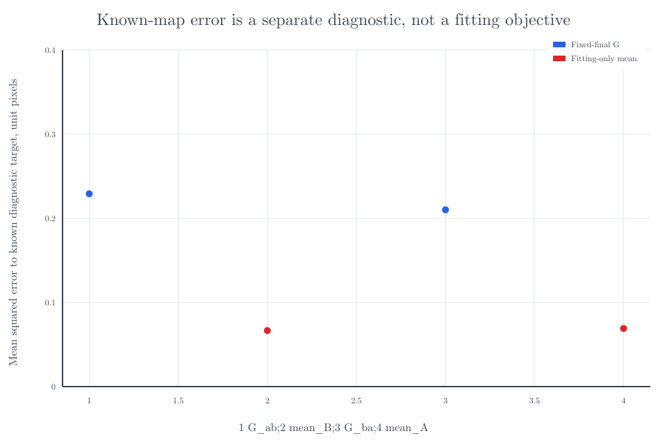
State the verified computation and its limits
The independent checker verifies202388 native parameter partials(maximum3.02e-6), 4076881 forward values(maximum1.09e-6),86 representative final scalar differences, all192 Adam transitions bit exactly and every phase's unselected owners. All1500 unpaired row pairs, all source domain pixels/disjoint IDs, exact original_B known targets and all validation/final-test scalar records are checked. Native delegation and this complete report preserve all original artifacts and all347 additional checkpoints exactly. Four optimizer counters finish at48.
The run's final test cycles remain large:.458553344/.469415665, with identity L1=.471133351/.465910286. Its galleries show weak translations. Neither a valid joint snapshot nor a finite cycle objective establishes convergence, class preservation or identification of the chosen rotation/inversion. The complete editable program, original and broader galleries, wrong-schedule control and fitting-only references keep those limits inspectable together.